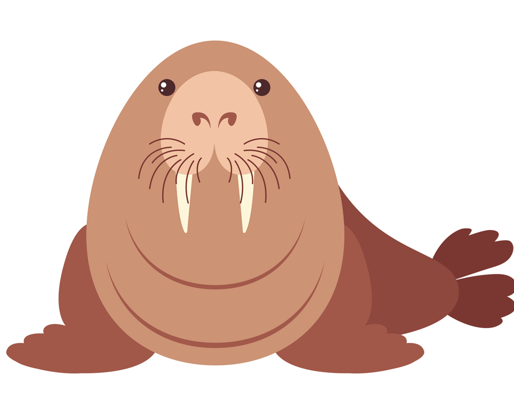

Walrus
Walruses have long tusks and a prominent mustache.These large
marine mammals are found near the Artic Circle. They are
extremely social and snort and bellow loudly at their companions.
During the mating season they are quite aggressive.
Walruses have an air sac under their trhoat, which helps them float
in the water so they can sleep!